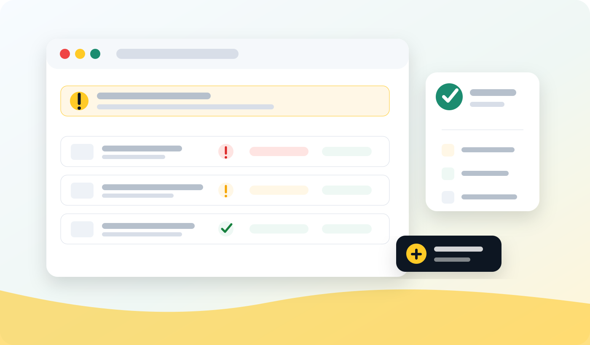

Merchant Center
Product status, diagnostics, destination eligibility, shipping, price, availability, identifiers, and policy warnings decide whether products can enter Shopping auctions.
Google Shopping troubleshooting

Last updated:
Google Shopping ads not showing is not one problem. It is usually a chain: product eligibility, feed quality, campaign setup, bidding, budget, competitiveness, and demand all have to line up before products can win impressions.
Quick diagnosis
If Shopping ads have zero impressions, do not start by rewriting every product title or increasing every budget. First confirm that the products are eligible to show. Then confirm the campaign is actually allowed to serve those products. Only after that should you diagnose bidding, budgets, product competitiveness, and search demand.
Product status, diagnostics, destination eligibility, shipping, price, availability, identifiers, and policy warnings decide whether products can enter Shopping auctions.
Campaign status, product groups, asset groups, listing groups, feed labels, budgets, bidding, locations, schedules, and goals decide whether eligible products are actually used.
Product titles, product types, categories, price, delivery promise, reviews, margin, and demand decide whether products can win enough auctions to be seen.
Step 1
The first question is not whether Google Ads is spending. The first question is whether the products can be used in Shopping ads at all. Merchant Center is where product approval, destination eligibility, feed diagnostics, website mismatches, shipping requirements, product identifiers, and policy issues surface. If a product is disapproved, pending review, missing required data, or not active for the Shopping ads destination, campaign changes will not make it show.
Start in Merchant Center with the affected products, not just the account summary. A green-looking account can still contain hundreds of products that are excluded, limited, or waiting for review. Look for patterns by product type, brand, country, feed label, item group, or source. If every product in one category has the same issue, the root cause is probably a feed rule, source field, Shopify app mapping, product template, shipping setting, or website mismatch.
Use Google's Merchant Center product data specification as the rulebook for required and recommended attributes. Then use your own feed data to diagnose the cause. The specification tells you what Google expects; your feed audit tells you which products are missing it and whether the problem will come back after the next sync.
Step 2
A product can be valid in the feed and still not be available to the campaign you are looking at. Google Shopping depends on the product being eligible for the right destination, country of sale, language, currency, and feed label. This is easy to miss when a retailer sells in multiple markets, migrates Merchant Center accounts, uses supplemental feeds, or splits campaigns by country.
For example, a product might be approved for Australia but the campaign targets New Zealand. A campaign might use a feed label that excludes the product. A product might be available for free listings but not Shopping ads. A landing page might redirect users from one country to another, which can break the match between submitted product data and the user experience.
Destination issues often look like a Google Ads problem because the campaign has no impressions. In reality, the campaign may simply have no eligible products to serve. Before changing bids, check that the exact products you expect to advertise are approved for Shopping ads in the same country and feed label used by the campaign.
Step 3
If the wrong Merchant Center account is linked to Google Ads, or if an old account remains connected after a migration, Shopping campaigns can quietly point at the wrong product universe. This is common after agency handovers, Merchant Center Next migrations, multi-client account changes, platform rebuilds, or market expansions.
Confirm the Google Ads account is linked to the Merchant Center account that contains the approved products. Then confirm the campaign is using the expected country, feed label, and product source. If you manage multiple brands, stores, or regional catalogues, do not assume the product count in Google Ads matches the products you want to advertise. Check the actual product filters and listing groups.
This also matters for Performance Max. Google's Performance Max campaign documentation explains how the campaign type works across Google's advertising channels. For Shopping delivery, Performance Max can promote products from a linked Merchant Center account, but it still depends on the feed, listing group filters, campaign settings, and asset group structure. If the feed connection is wrong, Performance Max can spend against the wrong products or fail to serve the products you care about.
Step 4
Once Merchant Center looks healthy, move into Google Ads. It sounds basic, but many zero-impression problems come from campaign-level controls: paused campaigns, ended campaigns, exhausted budgets, billing holds, account verification, disapproved ads, invalid location settings, ad schedules, or overly narrow targeting.
Shopping campaigns and Performance Max campaigns do not behave like classic keyword campaigns, but they still need permission to run. Check that the campaign, asset groups, ad groups, product groups, and relevant assets are enabled. Check that the schedule includes the current day and time. Check that location targeting matches where the products are approved and where the ecommerce site can sell. Check that the account has no billing or verification issue preventing serving.
Do not diagnose feed quality until the campaign is actually allowed to participate in auctions. If the campaign cannot run, the best product data in the world will still produce zero Shopping impressions.
Step 5
Products often disappear because they are filtered out. In Standard Shopping, product groups can exclude products by category, brand, item ID, condition, product type, custom label, or channel. Google's Shopping campaign product group documentation notes that products need to be included in active product groups to be eligible for ads. In Performance Max, listing groups and asset groups can narrow product coverage. A campaign may look active while the relevant products sit outside the group that is eligible to serve.
This is especially common when campaigns are split by margin, category, brand, clearance, season, or custom labels. If a product is missing a custom label, has a changed product type, or belongs to a category that no longer matches the filter, it can fall out of the intended campaign. The problem may not be that Google refuses to show the ad; it may be that your own campaign structure has no place for that product.
Review excluded product groups and asset group listing groups carefully. Look for filters based on stale product types, renamed categories, old feed labels, missing custom labels, or item IDs that changed during a platform migration. If product IDs changed, historical campaign structures and product exclusions can become unreliable overnight.
Step 6
If products are eligible and included, the next question is whether the campaign can win auctions. Low budgets, low bids, aggressive ROAS targets, limited conversion history, or campaign learning constraints can suppress delivery. In 2026, many retailers run Shopping through Performance Max, which means product delivery is shaped by goals, expected conversion value, audience signals, creative assets, landing pages, and automation as well as the feed.
A product with a high ROAS target and little conversion history may receive very limited traffic. Google's Smart Bidding documentation explains how automated bidding uses Google AI to optimise for conversions or conversion value at auction time. A campaign with a tiny budget may spend on a few proven products while the rest of the catalogue receives no impressions. A Standard Shopping campaign with low bids may be eligible but not competitive. A campaign that recently changed bidding strategy may need time to learn before delivery stabilises.
Do not jump straight to a large budget increase. First prove that the products are eligible, included, and correctly segmented. Then test whether bidding or budget is limiting delivery by reviewing impression share, lost impression share where available, budget status, bid strategy status, product-level impressions, and whether spend is concentrated on a small set of products.
Step 7
Performance Max and automated bidding depend heavily on conversion goals. If the campaign is optimising toward the wrong action, missing conversion values, duplicate conversions, low-value goals, or broken tracking, delivery can become distorted. Sometimes ads are technically showing, but the campaign is learning from signals that do not match the business objective.
For ecommerce, make sure the campaign is using purchase or meaningful revenue goals, not a soft goal that encourages the wrong traffic. Check conversion value, currency, enhanced conversions, consent mode implementation, primary versus secondary goals, and whether imported conversions are delayed or duplicated. If a campaign is optimising for a goal with too little data, it may struggle to scale product coverage.
This is not purely a tracking issue. It affects which products the campaign believes are worth showing. If the campaign cannot understand value, it may over-serve easy products, ignore high-margin products, or avoid new products that need exploration.
Step 8
Product eligibility gets you into the auction. Product feed quality helps you win the right auction. Weak titles, vague product types, missing GTINs, thin descriptions, poor images, missing variant attributes, incorrect Google product categories, and generic landing pages all make it harder for Google to match products to relevant shopping intent.
Start with the attributes Google uses to identify, classify, and match products. Google's GTIN documentation explains why valid product identifiers matter. Google's product_type documentation explains how merchant-defined category paths help Google understand what you sell. The Google Product Category and Product Type Google Shopping explainers show how those two classification signals should work together rather than being confused.
For product titles, use the Google Shopping Title Optimization Guide. Titles should clearly describe what the product is, not just repeat a short ecommerce name. Add the product type, brand, model, size, colour, material, compatibility, gender, age group, pack size, or defining attribute where it helps shoppers choose. Avoid stuffing keywords into titles that make the product less readable or less accurate.
Step 9
Sometimes Google Shopping ads are not showing because the product is eligible but commercially weak. If competitors have lower prices, faster shipping, stronger reviews, better product images, richer product data, or more trusted landing pages, your products may lose auctions or receive very few impressions. This is especially true in categories with similar products and high competition.
Price and availability are also policy and trust signals. If the feed price does not match the landing page, or if the feed says in stock while the product page says out of stock, Google may limit or disapprove products. Google's shipping attribute documentation is useful when product-level shipping needs to be submitted, especially for bulky, regional, restricted, or variable-rate products.
Commercial competitiveness is not always solved inside Google Ads. You may need better product pages, clearer shipping promises, stronger images, cleaner variants, richer product content, or a different campaign structure that separates margin, clearance, best sellers, and long-tail products. The feed needs to tell Google what the product is. The offer needs to make the shopper want it.
Step 10
Not every product has search demand at all times. Seasonal products, niche accessories, obscure spare parts, new products, expensive variants, and low-awareness brands may have very low search volume. In those cases, the campaign may be configured correctly but still generate few impressions.
Separate a technical serving problem from a demand problem. If approved best sellers in common categories are not showing, look harder at eligibility, campaign setup, bids, budget, and product quality. If only niche products have no impressions, check whether the titles and product types include the language shoppers actually use, whether the products are included in broader campaign structures, and whether the budget is being consumed by easier products before the long tail can be tested.
Long-tail product demand is where feed quality matters most. A generic title might work for a well-known product with high demand, but a niche product needs descriptive product type, model, compatibility, material, size, and use-case language. Better product data does not create demand from nothing, but it can help Google match the product to the specific searches that do exist.
Checklist
FAQ
Google Shopping ads may not show because products are not approved in Merchant Center, the wrong Merchant Center account is linked, products are excluded by listing groups, the campaign is paused or limited, bids or budgets are too restrictive, conversion goals are wrong, or the products are not competitive enough to win auctions. Start with Merchant Center product status, then check campaign setup, listing groups, budget, bidding, and search demand.
New products and major feed changes can need review time before ads start showing. Even after approval, Performance Max and Shopping campaigns may need time to learn, especially if budgets are small or conversion data is limited. If nothing is serving after the products are approved, check campaign status, listing groups, bidding, budget, policy restrictions, and whether the campaign includes the right products.
Yes. Approved products are eligible, but eligibility is not the same as delivery. Products can be approved in Merchant Center and still receive no impressions because they are excluded from the campaign, filtered out by product groups, limited by low bids or budgets, constrained by targets, affected by low demand, or beaten in auctions by stronger offers and better product data.
Performance Max can use products from a linked Merchant Center account when the campaign includes a product feed and the products are eligible for the selected country and destination. However, asset groups, listing groups, feed labels, product filters, final URL settings, and campaign goals can still limit which products are promoted.
Check Merchant Center first. Confirm the products are approved, active for Shopping ads, available in the target country, and free of critical diagnostics. Then check Google Ads: campaign status, budget, bidding, conversion goals, asset groups or product groups, location targeting, schedule, and whether the right Merchant Center account and feed label are connected.
Weak product titles usually do not block ads by themselves, but they can reduce matching and make products less competitive. If Google cannot clearly understand what a product is, or if the title misses the product type, brand, model, size, colour, material, or compatibility, the product may win fewer relevant auctions and appear to be invisible.
Fix eligibility and feed quality first. Increasing budget will not help products that are disapproved, excluded, missing required data, priced incorrectly, or not included in the campaign. Once products are eligible and the campaign is configured correctly, budget and bidding changes can help reveal whether the issue is auction pressure or lack of demand.
FeedOps can help diagnose product feed, Merchant Center, product data, product type, title, category, identifier, availability, and campaign segmentation issues that stop or limit Shopping ads. Some causes, such as billing, account access, or website policy problems, may need work inside Google Ads, Merchant Center, or the ecommerce site as well.
Next step
If Google Shopping ads are not showing, start with product eligibility and feed quality before changing every campaign setting. A feed audit gives you a cleaner first read on the products that are blocked, weak, missing signals, or unlikely to show.